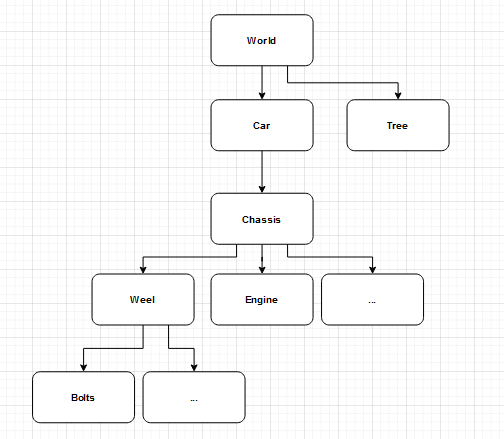

OpenGL Simulation
Building an OpenGL simulation
This project was built as a submission for my first graphics programming assignment. It introduced me to many of the fundamentals of real time rendering and OpenGL programming, and sparked my passion for graphics programming.
Scene Graph

A Scene Graph is a hierarchical data structure used in 3D graphics to organize objects in a scene. It allows for efficient hierarchical transformations allowing one object to be transformed relative to its parent in the hierarchy.
My implementation worked by creating a tree of SceneGraphNodes, each storing a reference to an object and an array of child nodes. In the render loop, i can then iterate through the tree to calculate the world space matrix of each object to send to the shader pipeline.
As seen in the top left of the screen, i also had a debug UI that displayed the scene graph hierarchy, showing the names of each object and how they are related in the hierarchy.
void Scene::BuildBranchOfHierarchy(SceneGraphNode* node, int level, int& screenHeight)
{
TextObject* textBranch = new TextObject((float)(level * 15 + 15), (float)(SCREEN_HEIGHT - screenHeight), GLUT_BITMAP_9_BY_15, node->GetNodeObject()->name, Vector3f(0, 1, 0));
textObjects.push_back(textBranch);
if (node->GetNumberOfChildNodes() > 0)
{
for (int i = 0; i < node->GetNumberOfChildNodes(); i++)
{
screenHeight += 15;
BuildBranchOfHierarchy(node->GetChildNode(i), level + 1, screenHeight);
}
}
}
Camera
This OpenGL simulation featured a custom camera system that allowed for multiple modes of movement and control, a system i still use in my current projects. the primary mode is similar to most game engines, where the user can move around the scene using WASD and the mouse by holding right click. The other mode was a tracking mode, allowing users to select an object to track and then orbit that object.
The primary input based system was implemented using a combination of keyboard and mouse input handling using basic trigonometry, with the camera's position and orientation updated in real-time based on user input.
The tracking mode was implemented by calculating the offset between the camera and the target object, and then applying a rotation to that offset based on user input to achieve an orbiting effect.
void Camera::TrackObject(Object* object)
{
trackedObject = object;
if (trackedObject != nullptr)
{
Vector3f direction = (eye - object->worldPosition).Normalized();
angleFromObject = atan2(direction.z, direction.x);
// avoid camera flipping when using a negative distance from object focus
distanceFromObjectFocus = abs(distanceFromObjectFocus);
}
}
void Camera::HandleObjectFocus()
{
if (Keyboard::GetButtonState('s') == false)
distanceFromObjectFocus -= 0.03f;
if (Keyboard::GetButtonState('w') == false)
distanceFromObjectFocus += 0.03f;
angleFromObject += 0.01f;
center = center + (trackedObject->worldPosition - center) * movementSpeed;
targetPosition.x = center.x + (cos(angleFromObject) * distanceFromObjectFocus);
targetPosition.z = center.z + (sin(angleFromObject) * distanceFromObjectFocus);
eye = eye + (targetPosition - eye) * movementSpeed;
FocusWorldPosition(center);
}
OBJ File Loading
To support more complex object meshes, i wanted to build a system to load and render OBJ files. OBJ files store their data in a text format, so processing them is simple to understand and readable, however can lead to slow algorithm run times.
My implementation worked by reading the OBJ file line by line, parsing vertex positions, texture coordinates, and face definitions. I then stored this data in arrays and created vertex buffer objects (VBOs) to send the data to the GPU for rendering.
int FileLoader::LoadMeshFromOBJ(const char* filepath, Mesh& mesh)
{
std::string line; std::ifstream meshFile(filepath);
if (!meshFile.is_open())
{
std::cerr << "Issue with OBJ file " << filepath << std::endl;
return -1;
}
Vector3f vertexPosition; Vector3f vertexNormal; Vector2f vertexTextureCoordinate;
std::vector vertexPositions;
std::vector vertexNormals;
std::vector vertexTextureCoordinates;
// use an unordered map to make sure vertexes arent duplicated
std::unordered_map vertices;
while (getline(meshFile, line))
{
std::istringstream ss(line);
std::string type;
ss >> type;
if (type == "f")
{
for (int i = 0; i < 3; i++)
{
// Subtract 1 because OBJ indices start from 1, not 0
std::string vertexString;
ss >> vertexString;
std::vector indexes = getIntegersFromStringStream(vertexString, '/');
Vertex vertex = {vertexPositions[indexes[2] - 1], vertexNormals[indexes[0] - 1], vertexTextureCoordinates[indexes[1] - 1]};
if (vertices.count(vertex) == 0)
{
vertices[vertex] = mesh.vertexPositions.size();
mesh.vertexPositions.push_back(vertex.position);
mesh.vertexNormals.push_back(vertex.normal);
mesh.vertexTextureCoordinates.push_back(vertex.texcoord);
}
mesh.faces.push_back(vertices[vertex]);
}
}
else
{
if (type == "v")
{
ss >> vertexPosition.x; ss >> vertexPosition.y; ss >> vertexPosition.z;
vertexPositions.push_back(vertexPosition);
}
else if (type == "vn")
{
ss >> vertexNormal.x; ss >> vertexNormal.y; ss >> vertexNormal.z;
vertexNormals.push_back(vertexNormal);
}
else if (type == "vt")
{
ss >> vertexTextureCoordinate.x; ss >> vertexTextureCoordinate.y;
vertexTextureCoordinates.push_back(vertexTextureCoordinate);
}
}
}
meshFile.close();
return 0;
}
My first iteration of this file loader iterated through each vertex when checking for duplicates before inserting, which was highly inefficient, so upon reflection after the assignment, i refactored the function to use an unordered map for O(1) lookup and insertion of vertices.